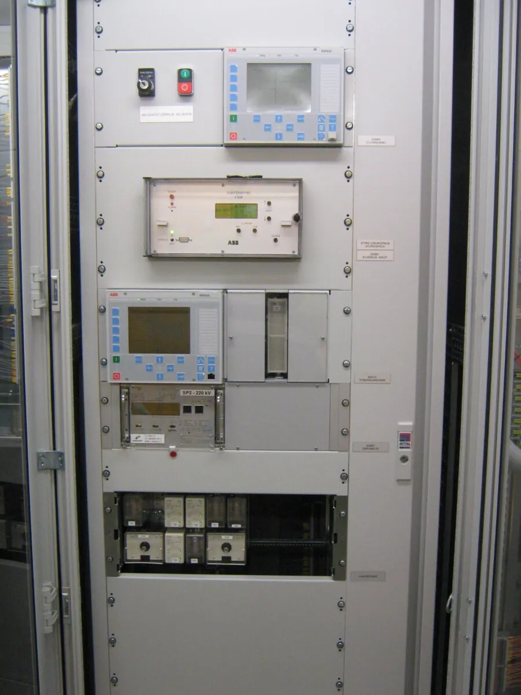
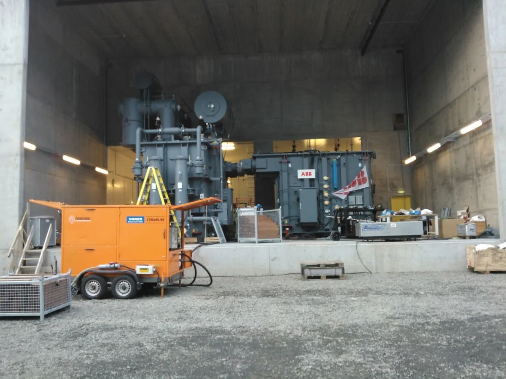

Meginstoðir

Lágspennuskápar
Eaton-Holec Tabula
Orkuvirki flytur inn skápaefni frá Eaton-Holec
Skápar notaðir bæði fyrir AC og DC og jafnvel rafgeyma

Millispennu-aflrofaskápar
TRYGGVI 2000
Eigin framleiðsla Orkuvirki á TRYGGVI 2000 fyrir aðveitustöðvar og dreifistöðvar
Stjórn- og varnarbúnaður og samskiptagáttir
Stjórnkerfi fyrir veitur
Undanfarin ár hefur hluti stjórn- og varnarbúnaðar orðið sífellt stærri hluti í verkum Orkuvirkis. Helgast þetta af aukinni sjálfvirkni í rafveitukerfum og betri búnaði til fjargæslu.
Fyrirtækið hefur unnið mest með varnarliða frá ABB, sem og stöðvartölvur og fjarskiptagáttir. Varnarliðar sem fyrirtækið hefur sett upp skipta hundruðum á undanförnum árum. Í hvern millispennuaflrofaskáp sem framleiddur er í Orkuvirki er settur sambyggður stjórn- og varnarliði. Þessir liðar og liðar annarra framleiðenda hafa möguleika á samskiptum við fjargæslukerfi.
Í mörgum stöðvum þar sem settir eru stjórn- og varnarliðar með samskiptamöguleikum er einnig sett upp samskiptagátt. Orkuvirki notar nú oftast búnað af gerðinni ABB, COM6xx, en einnig hafa verið sett upp kerfi af öðrum gerðum. Þá hefur Orkuvirki sett upp MicroSCADA fjargæslukerfi í aðveitustöðvum.

Verktakar
A- og B-löggilding
Orkuvirki tekur að sér verk fyrir verkkaupa, annað hvort sem sjálfstæður verktaki eða sem undirverktaki fyrir aðra. Fyrirtækið er löggiltur rafverktaki í samræmi við íslenskar reglur þar um, með A- og B-löggildingu. Helsti styrkur fyrirtækisins liggur í mannauð og reynslu og fá rétta aðila til samstarfs hverju sinni um verkefnin sem liggja fyrir.
Orkuvirki er tæknifyrirtæki með mikla sérfræðiþekkingu þegar kemur að tengivirkjum, spennistöðvum, dreifistöðvum, veitukerfum og iðnaði ýmiskonar. Fyrirtækið hefur hefur komið að hönnun virkja og stöðva frá upphafi verkefna og einnig sinnt breytingum sem verða í tímans rás með þróun tæknibúnaðar.

Þjónusta
Mælingar og prófanir
Orkuvirki býður upp á fjölbreytta tækni og verktaka þjónustu þegar kemur að háspennu og lágspennu. Fyrirtækið býður einnig upp á þjónustu við mælingar og prófanir á rafbúnaði s.s. DC kerfi ofl.
Orkuvirki hefur mikla reynslu og þekkingu á spennum og oliumeðhöndlun við uppsetningu þeirra. Fyrirtækið hefur yfir að ráða sérhæfðan tækja- og mælibúnað við uppsetningu spenna.

Hafa samband
Vinsamlegast hafðu samband á orkuvirki@orkuvirki.is, við svörum fljótt og vel.